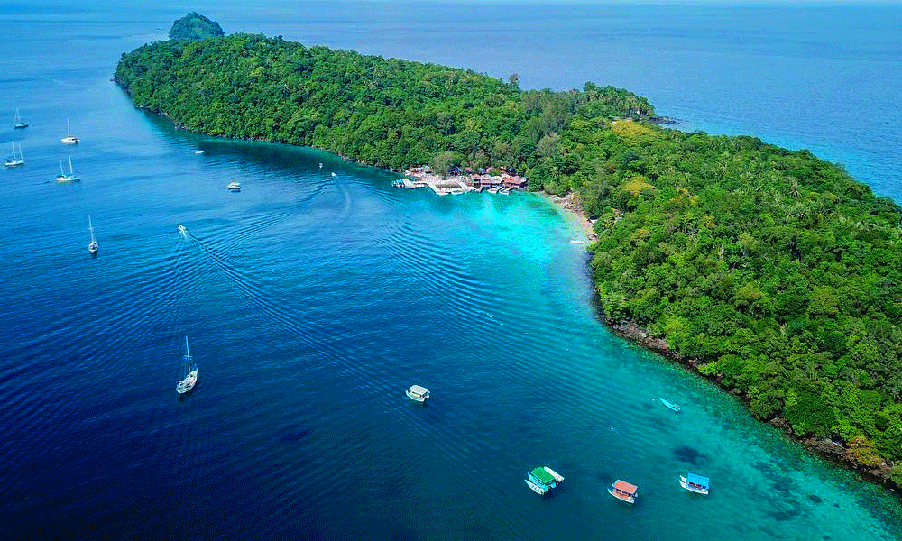
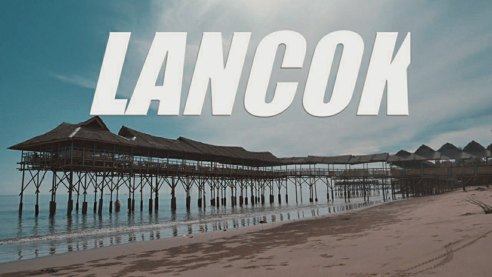

Mesjid Raya Baiturrahman
Masjid Raya Baiturrahman pertama kali dibangun di era Kesultanan Aceh. Bagian atap masjid ini dibuat sesuai dengan ciri khas masjid-masjid di Indonesia pada masa itu, atap limas bersusun empat.

wisata Pulau Rubiah sabang
Pulau yang tak jauh dari pulu sabang Taman Laut Pulau Rubiah Merupakan sebuah pulau cantik yang masih asri dengan luas wilayah sekitar 2.600an Hektar yang terkenal dengan pemandangan alam kerajaan bawah laut nya.

Previous
Next
Wisata pantai lancok Aceh Utara
Salah satu wisata yang ada di aceh utara ialah pantai nya yang menarik dan banyak spot foto untuk anda yang suka foto-foto yang lokasi nya bertepatan di Gampong Lancok Kec. Syamtalira Bayu Kab.Aceh Utara.